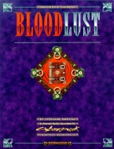

|  | Fiche technique |
| Supplément pour le jeu de rôles Cyberpunk 2020, édité par Ianus Games (Dream Pod 9) (1995) | |
| Langue | Anglais |
| Thème | Alternate Reality : vampires |
| Qualité du background | 4 / 5 |
| Qualité des scénarii | - |
| Qualité des règles | 4 / 5 |
| Qualité des illustrations | 4 / 5 |
| Qualité de l'écriture | 5 / 5 |
Ce supplément fait partie des Alternate Realities et se présente comme une suite à Night's Edge, en se concentrant sur les vampires. Au niveau du contenu, il y a un peu de mieux, et l'on sort des erreurs rencontrées lors du premier supplément. Le monde est présenté continent par continent, on parle de l'organisation sociale des vampires, de leur lien avec les gangs gothiques, des maladies, etc. Malheureusement, un écueil n'aura pas été évité : ce supplément aurait dû être un addendum à Night's Edge, et pour combler un petit volume, les auteurs ont eu recours au remplissage : une histoire longuette, un journal intime (pour se mettre dans l'ambiance) et plein de PNJ qui prennent une page chacun. Bref, ça a l'odeur du White Wolf, ça a le goût du White Wolf... et forcément ça déçoit un peu par rapport à la qualité excellentes des précédents suppléments Alternate Realities.
{kind=link}